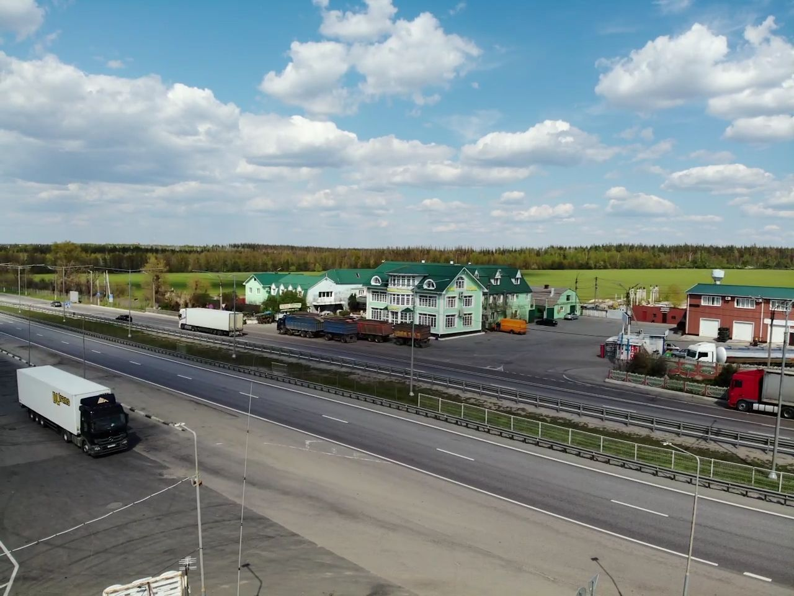

{% extends "base.html" %}
{% block content %}
<link href="../static/css/index.css" rel="stylesheet" type="text/css"/>
<script src="https://api-maps.yandex.ru/2.1/?apikey=844c1f31-f6a1-420f-899a-ed3e7de882b3&lang=ru_RU"
            type="text/javascript"></script>
<div class="carousel slide" id="carouselControls" data-bs-ride="carousel">
    <div class="carousel-inner">
        <div class="carousel-item active">
            
        </div>
        <div class="carousel-item">
            
        </div>
        <div class="carousel-item">
            
        </div>
    </div>
    <a href="#carouselControls" class="carousel-control-prev" role="button" data-bs-slide="prev">
        <span class="carousel-control-prev-icon"></span>
    </a>
    <a href="#carouselControls" class="carousel-control-next" role="button" data-bs-slide="next">
        <span class="carousel-control-next-icon"></span>
    </a>
    <a href="#carouselControls" class="carousel-control-next" role="button" data-bs-slide="next">
        <span class="carousel-control-next-icon"></span>
    </a>
</div>
<div class="container my-5">
    <div class="row gy-5 justify-content-between">
        <div class="col-md-8 col-sm">
            <h3>Мы на картах</h3>
            <div id="map"></div>
            <script type="text/javascript">
                ymaps.ready(init);
                function init(){
                    var myMap = new ymaps.Map("map", {
                        center: [52.085679, 39.181116],
                        zoom: 15.5
                    });
            myMap.geoObjects
                .add(new ymaps.Placemark([52.085679, 39.181116]));
                }
            </script>
        </div>
        <div class="col-md-4 col-sm">
            <h3>Наше меню</h3>
        </div>
    </div>
</div>
{% endblock %}